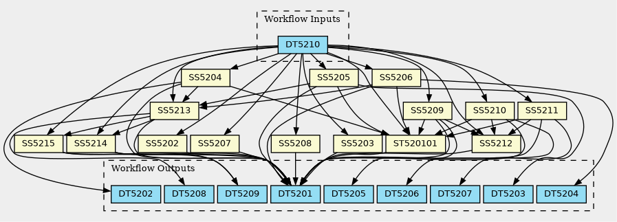

Forecasting the atmospheric dispersal of volcanic products requires accurate input parameters for transport models, including meteorological data and ash/gas emission terms. Such forecasting builds upon three basic ingredients: 1. Meteorological Data. Typically derived from global, regional, or local-scale models, meteorological data drive the transport and deposition of volcanic particles. 2. Transport Models. These models simulate atmospheric dispersal, incorporating processes such as wind advection, turbulent diffusion, and particle sedimentation. Besides atmospheric density and viscosity, sedimentation velocities depend also on particle size, density, and shape, which affect the particle drag coefficients and atmospheric residence times. Some transport models (e.g. FALL3D) include volcanic ash aggregation and aerosol chemistry, two aspects that can improve the accuracy of dispersal forecasts. 3. Emission Models. Emission models provide the so-called Eruption Source Parameters (ESP), needed to characterize the near vent properties of volcanic plumes (that are a kind of clouds which are connected to their source). The ESP, including eruption start and duration, cloud injection height, vertical mass distribution across the eruption column, Total Grain Size Distribution (TGSD), and Mass Eruption Rate (MER) are essential inputs to transport models. While some parameters (e.g., eruption start and end times, column height) can be directly observed, others like MER must be estimated by means of indirect methods, which introduces significant input uncertainties that propagate through the modelling workflow. The DTC-V2 workflow (WF5201) configures and runs an ensemble of FALL3D model realizations, potentially assimilating in the model different sources of data (groundbased or satellite-based observations). A major advantage of the ensemble model approach is that it allows delivering both deterministic (e.g. ensemble mean) and probabilistic (e.g. fraction of ensemble members exceeding a given condition) forecasts, reflecting the inherent uncertainties in the ESPs. On a coarse-grain, the workflow requires four main steps: 1. Get atmospheric data from Numerical Weather Prediction (NWP) models, assumed to be run and delivered by a third party. DTC-V2 can ingest either NWP forecast data (up to a few days ahead) or reanalyses (for past events or “what if” scenarios). Different agencies (e.g. ECMWF, National Weather Services, etc.) serve global/regional data at various spatial and temporal resolutions. 2. Get the Eruption Source Parameters (ESP) from different sources; e.g. from volcano monitoring data provided by State Volcano Observatories (SVO). In case ESPs from several sources are available, the workflow assigns a ranked priority as shown in Table 1. 3. Setup the FALL3D model and run an ensemble of simulations in the FENIX RI or HPC (leonardo@CINECA). The different ensemble members, each representing a single deterministic scenario, are set by perturbing some critical ESPs (e.g. eruption column height) within their uncertainty range. The model allows introducing both absolute and relative errors for all ESP around the observed value. 4. Post-process the results
{kind=link}